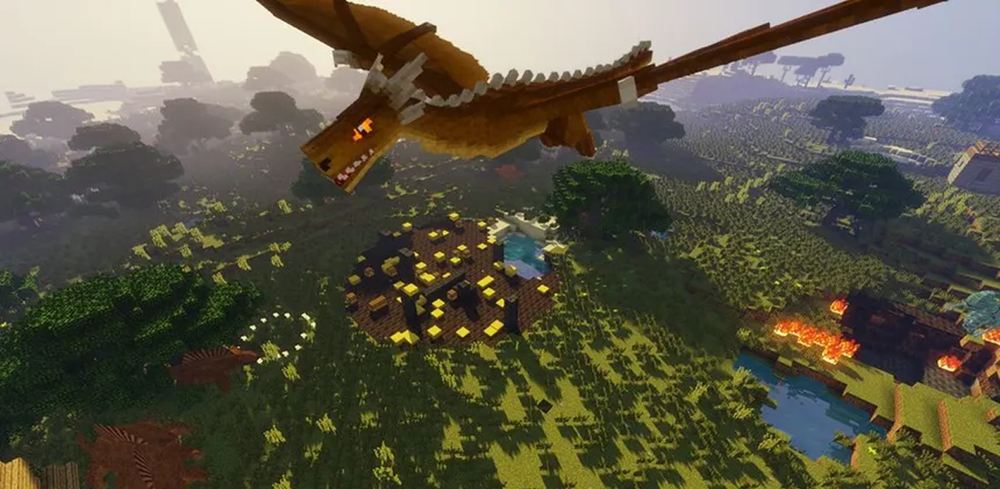
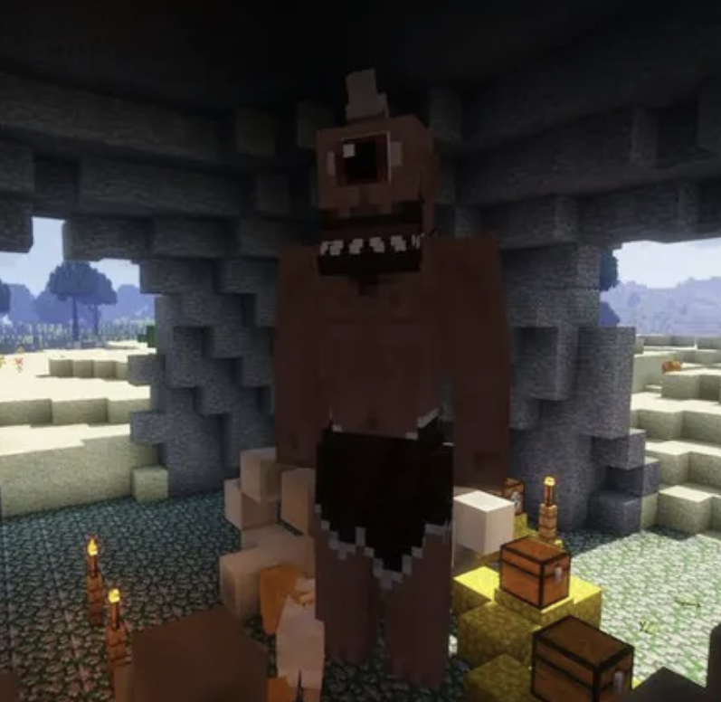
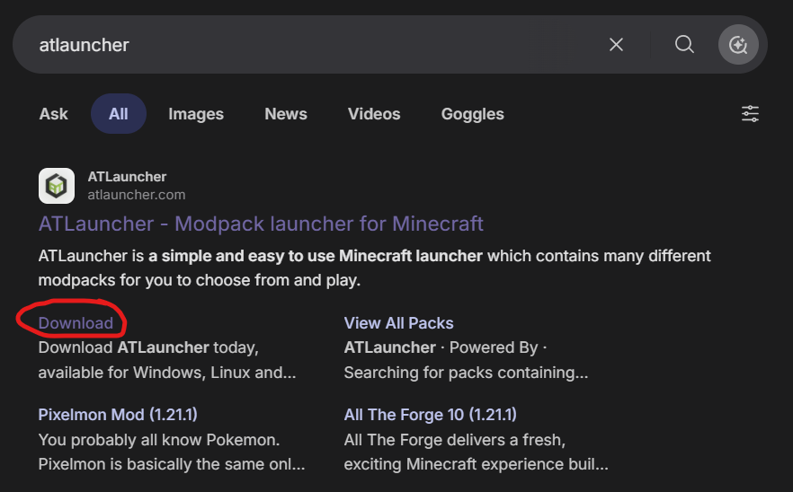
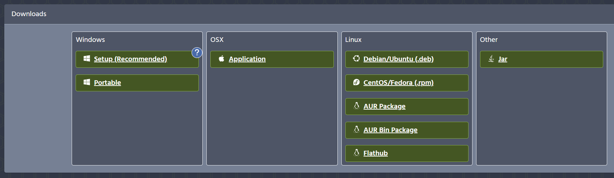
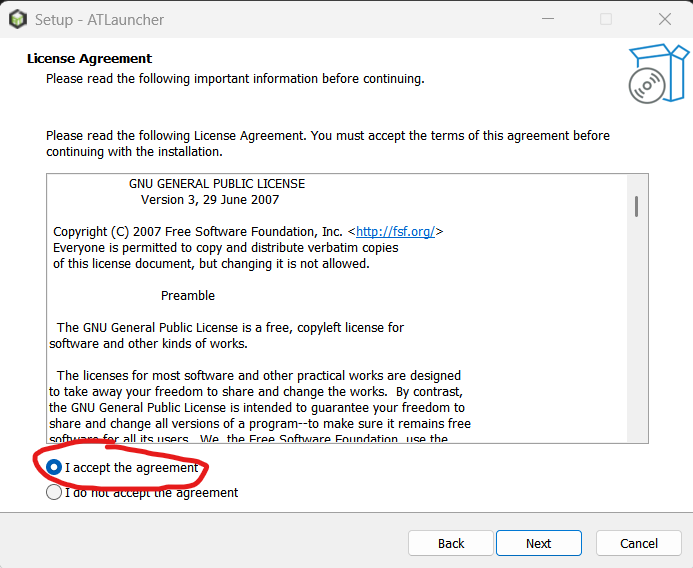
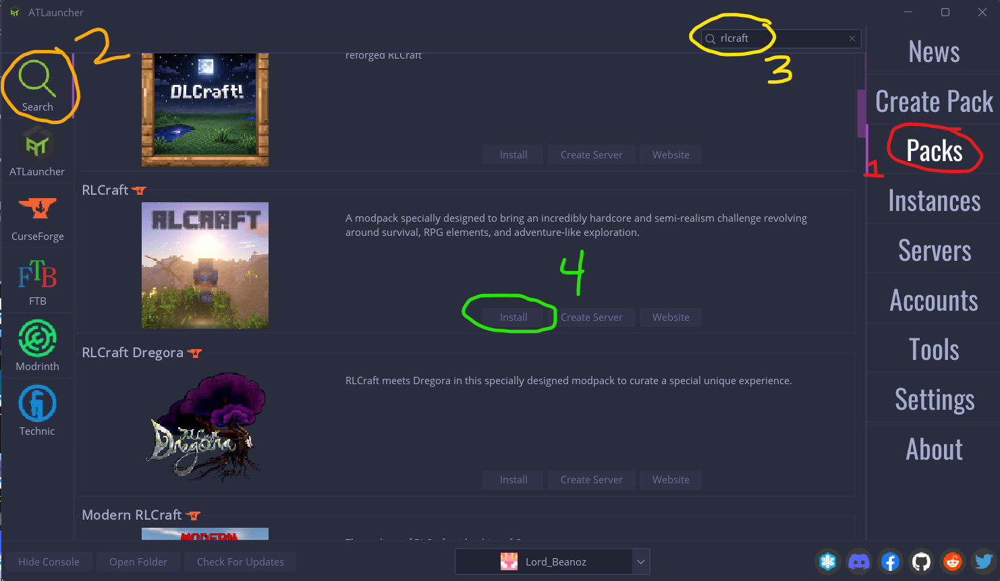
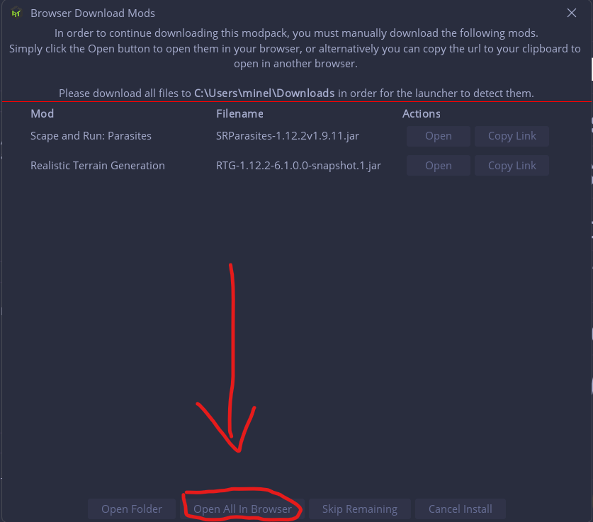
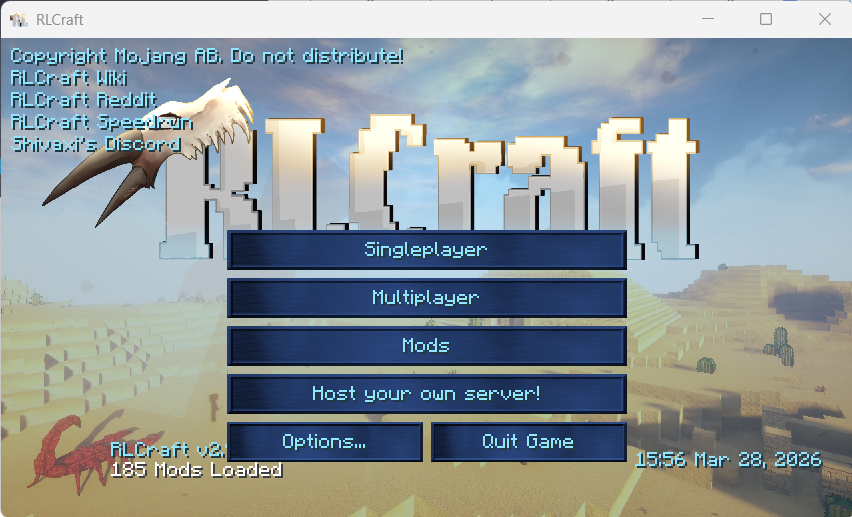

Have you ever wanted to play the most popular Minecraft modpack, but are confused on how to actually install it? Fear not! This tutorial will teach you how to install ATLauncher, a mod loader, and the modpack RLCraft! Onward!


Firstly, search up "ATLauncher" and click on the downloads button, or click This Link. Scroll down and select what operating system you are using to download the corresponding setup.exe file.
If you'd like, you can also use any other mod launcher like Curseforge or Modrinth!

Next, double click on the setup file. This will lead you to the installation wizard that will install ATLauncher. Make sure to accept the agreement and let ATLauncher access your PC.
Also, if you don't already have Java installed, make sure to hit the check mark that installs Java; ATLauncher needs it to run.

If you are still having issues, This Video might help!
After opening ATLauncher, it might be a bit confusing, so make sure to follow these steps carefully. Refer to the image for guidance.
| 1. Click on the Packs tab to the right. | 2. Make sure you are on the Search tab to the left. |
| 3. Type "RlCraft" into the search bar at the top. | 4. Finally, scroll down and click "Install" on RLCraft. |


Once you hit install, choose what version of RLCraft you want (probably the most recent). For some mods on ATLauncher, you have to manually download them.
Simply click on the "Open All in Browser" button at the bottom, and they will download when you visit their tab. Make sure they go into the downloads folder of your PC, and ATLauncher will automatically take them.
And that's it! Click on the installations tab to the right and hit "play" on RLCraft. After loading, create a new world in Singleplayer, and the world awaits! If you enjoy the pack, make sure to show Shivaxi some love!
